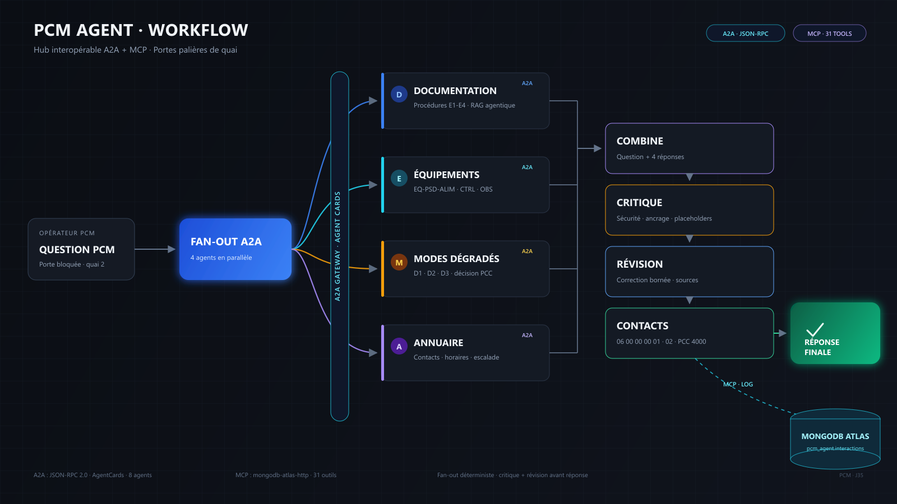

Procédures éclatées
Documents longs, versions multiples, recherche manuelle pendant que le quai reste bloqué.
Hub d'agents interopérable
Résoudre une panne de porte palière à distance, avec des procédures sourcées, des agents spécialisés et une réponse contrôlée avant envoi.
J35 · Démonstration · 13 novembre 2026
Phase 1Problématique
Les procédures existent, mais elles sont longues, éclatées et connues des seuls agents expérimentés. Résultat : des pannes réglables à distance déclenchent une intervention terrain.
Documents longs, versions multiples, recherche manuelle pendant que le quai reste bloqué.
Seuls quelques agents connaissent les bonnes étapes, les équipements et les bons contacts.
Un diagnostic guidé aurait suffi, mais l'astreinte se déplace et l'exploitation attend.
« Un collègue expérimenté, mais en version IA. » Brief projet PCM
Phase 2Solution
L'orchestrateur ne devine pas. Il interroge quatre spécialistes en parallèle, assemble leurs réponses, les fait critiquer, puis publie une version corrigée.
Quatre appels JSON-RPC en parallèle vers les agents spécialisés.
Question et réponses assemblées dans un contexte unique et traçable.
Sécurité, ancrage, complétude, placeholders. Verdict JSON.
Correction bornée, numéros exacts restaurés, réponse finale.

Phase 2Solution
Chaque agent a un métier, un prompt et une source documentaire. L'utilisateur ne voit que la réponse finale.
Procédures E1 à E4, réarmement, sécurité, sources.
A2AEQ-PSD-ALIM, CTRL, OBS. Points de contrôle et étape.
A2AD1, D2, D3. Mesures, décision et escalade PCC.
A2AContacts exacts, horaires, condition d'appel.
A2ASécurité, ancrage, placeholders. Verdict JSON.
INTERNEChaque agent exposé possède une AgentCard complète, servie en JSON et versionnée avec le flow.
Phase 2Solution
fan-out complet, quatre agents en parallèle
agents spécialisés appelés sur la même demande
outils MCP exposés par MongoDB Atlas
AgentCards servies et exportées
interactions journalisées dans Atlas
tests passerelle et anti-placeholder
Phase 3Prochaines améliorations
Le hub est prêt. La prochaine valeur vient des documents : couvrir d'autres maintenances réalisables par des personnes sans compétence technique, avec les mêmes garde-fous.
Nouvelles procédures ingérées, versionnées et validées, avec la source affichée dans chaque réponse.
Un spécialiste par famille d'équipement, exposé en A2A. Le hub reste le seul point d'entrée.
Jeu d'évaluation, feedback utilisateur et analytics pour mesurer les pannes réellement évitées.
Phase 3Prochaines améliorations
Priorité aux pannes que l'agent PCM peut résoudre à distance, sans outillage ni habilitation.
E1-E4, D1-D3, équipements, annuaire. Premier cas d'usage couvert.
CouvertDAT, monnayeur, bourrages, contacts. Agent extra déjà disponible.
Couvert · extraArrêt, sécurisation, escalade. Procédure à valider avec l'exploitation.
À ingérerBlocage, mode dégradé, accès voyageurs. Documents à structurer.
À ingérerPannes simples, sécurité, relais maintenance. Fort potentiel terrain.
À ingérerPérimètre sensible : règles de sécurité et escalade obligatoire.
À cadrerMême hub, mêmes agents, mêmes garde-fous. Seuls les documents et les prompts métier changent.
Conclusion
Prochaine étape : couvrir une deuxième famille de maintenance avec des documents validés, pour rendre faisable à distance ce qui mobilise aujourd'hui un expert.
PCM · J35 · 2026
Flèches ← →, espace, ou clic pour naviguer. F plein écran.